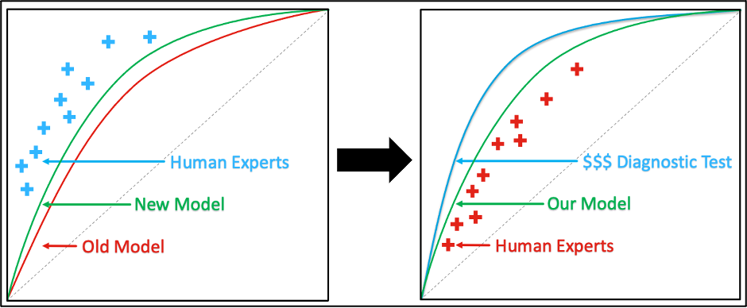

LVHnet
Can a chest X-ray help us diagnose heart failure before symptoms develop?
Heart failure is responsible for 1 in 8 deaths in the United States. Although medical therapy can be highly effective in preventing worsening heart failure and mortality, many patients are diagnosed with advanced disease when treatment is less effective. Increasing the diagnostic accuracy of front-line tests such as chest x-rays in the detection of left ventricular hypertrophy and dilation may help to identify patients with early-stage heart failure before the onset of symptoms.
Current deep learning methods often use a human interpretation as the definitive label which may limit clinical accuracy. This limitation may be overcome by training models against more advanced and expensive gold standard testing.
In this study, we created a research database of chest x-ray images in patients that had undergone an echocardiogram, the gold-standard test of LV assessment. After image pre-processing, we developed a deep learning model to detect LV hypertrophy (LVH) and dilation (DCM) as diagnosed on echocardiography. If these abnormalities could be detected by chest x-ray, we may be able to detect early stages of heart failure before patients become symptomatic and intervene sooner.
The next step was to determine if the model could achieve similar or better accuracy in the assessment of these LV abnormalities compared to human radiologists. A total of 15 radiologists were asked to read 300 x-rays and decide of whether a patient had severe LVH or a dilated LV. The deep learning model outperformed 13 of the 15 radiologists in the detection of these states, suggesting that training a model against the gold standard echocardiography may result in improved model performance over even expert human interpreters. Clinical deployment of this model may allow for improved patient selection for further cardiac testing.